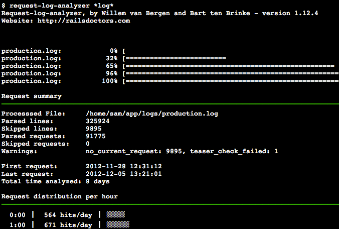

"The Website's Slow"
Tips and Tools for Identifying Performance Bottlenecks
My name is Sammy Larbi
I'm a freelance Ruby developer
6 years playing with Rails
4 projects recently needed P.E.D.
(Performance Enhancing Development)
Interrupt Me
"The Website's Slow"


Or maybe your app resides on one network and your DB on another, and you're doing
select * from a_table
with many records & a ton of
BLOB
columns you have to transferData Anonymity
Visibility
rails-footnotes

bullet

rack-insight
ruby-prof
ruby-prof
entire action
gem 'ruby-prof', groups: [:development, :profile] # in Gemfile
if Rails.env.profile? # in config.ru
use Rack::RubyProf, :path => '/temp/profile'
end
# profile db connection settings in config/database.yml
# (same as dev environment is fine)
# Create config/environments/profile.rb with at least these options:
config.cache_classes = true
config.cache_template_loading = true
# bundle install and restart with: rails s -e profile
ruby-prof
specific lines of code
result = RubyProf.profile do
...
[code to profile]
...
end
printer=RubyProf::GraphPrinter.new(result)
printer.print(STDOUT, {})
benchmark
Benchmark.bm do |x|
x.report("find by id: ") {
@student = Student.find_by_id(params[:student_id])
}
x.report("find: ") {
@student = @district.students.find(params[:student_id])
}
end
user system total real
find by id: 0.090000 0.000000 0.090000 ( 1.352654)
find: 0.030000 0.000000 0.030000 ( 0.030710)
Further Investigation
perftools.rb
(example output)rails performance testing

top
free
Per process:
ps aeux --sort=-vsz
puma
Uses
threads
instead of worker processesi.e., how a web server is supposed to work-Wes Gamble
puma
Use JRuby or Rubinius to take full advantage
# in config/environments/production.rb
config.threadsafe!
# processor cores available / avg load time (s/page) * 60 (s/min)
=>
max throughput in pages per minute
Server Level Stats
For your investigation:visage & collectd
request‑log‑analyzer
new relic
rails_metrics vs. system-metrics
Unmaintained?
ActiveSupport::Notifications
ActiveSupport::Notifications.instrument("render", :extra => :information) do
render :text => "Foo"
end
ActiveSupport::Notifications.subscribe("render") do |*args|
events << ActiveSupport::Notifications::Event.new(*args)
end
harness
&
statsd
statsd requirements
- needs nodejs
- graphite
- which needs django, carbon, and other packages
- which all run on python
epic yak shaving
This Needs To Be Easier
But I don't have all the answers yetWho ever said hardware was cheaper than programmers?
OMG Thanks!
- Code:
https://github.com/codeodor - Blog:
http://www.codeodor.com - Tweet:
@codeodor